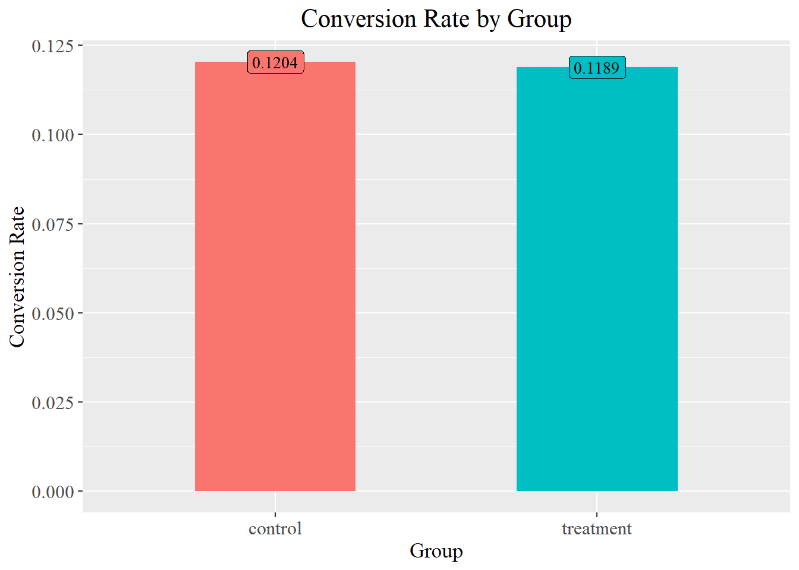
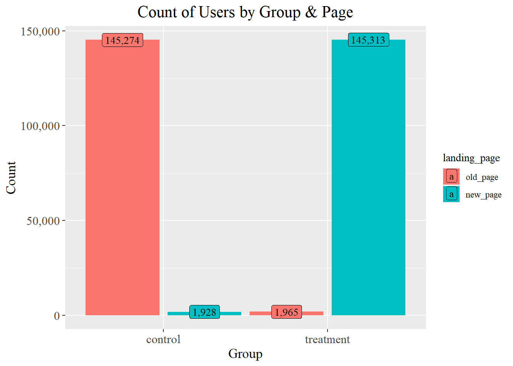
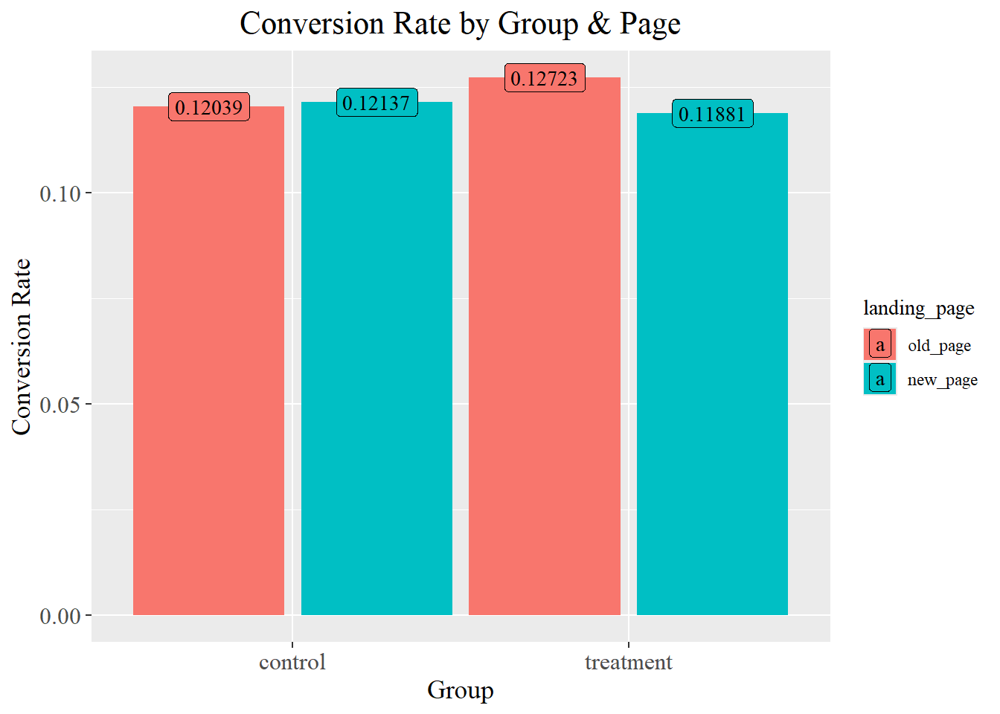
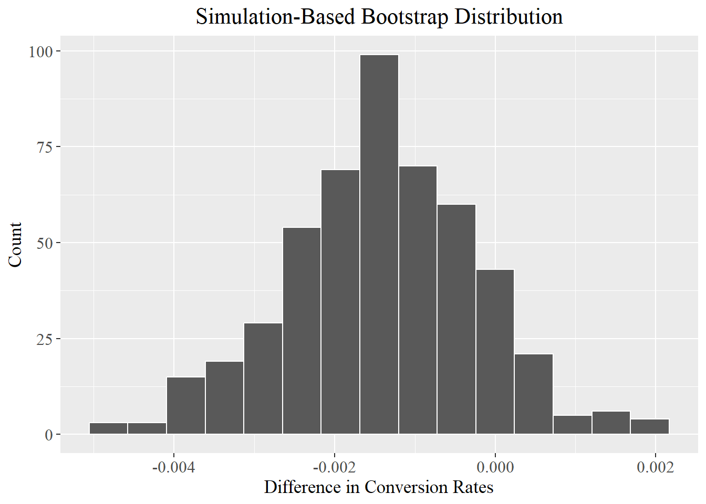
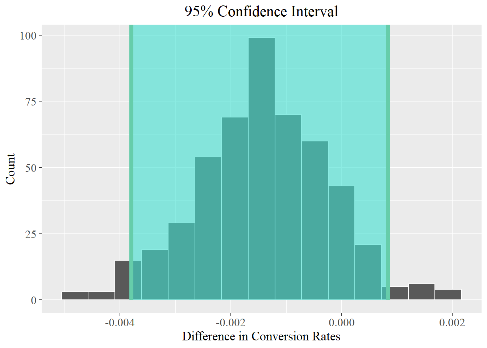
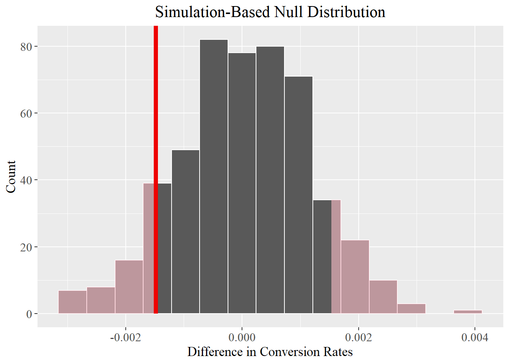

# Load libraries
library(tidyverse)
library(infer)
library(scales)
library(vroom)
set.seed(2023)kaggle
EDA & A/B Testing with R
https://www.kaggle.com/code/timothyabwao/eda-a-b-testing-with-r
# Improve appearance of plots
theme_update(
axis.text = element_text(family = "serif", size = 12),
axis.title = element_text(family = "serif", size = 13),
plot.title = element_text(family = "serif", size = 16, hjust = 0.5),
legend.text = element_text(family = "serif"),
legend.title = element_text(family = "serif")
)
options(repr.plot.width = 8, repr.plot.height = 4.5, repr.plot.res = 150)This dataset contains A/B test results for an e-commerce website. A subset of users were exposed to a new landing page, and the current goal is to assess the effect of this new page on the conversion rate.
# Load the data
ab_data <- vroom("ab_data.csv")
slice_sample(ab_data, n = 5)# A tibble: 5 × 5
user_id timestamp group landing_page converted
<dbl> <time> <chr> <chr> <dbl>
1 710525 59:23 control old_page 0
2 828100 15:26 treatment new_page 0
3 917542 35:11 treatment new_page 0
4 923350 14:00 control old_page 0
5 936644 02:36 treatment new_page 0ab_data <- ab_data |>
mutate(landing_page = fct_rev(landing_page), # set order to (old_page, new_page)
converted = factor(converted)) # categorical required in infer proportion testsExploratory Data Analysis
ab_data |>
group_by(group) |>
tally()# A tibble: 2 × 2
group n
<chr> <int>
1 control 147202
2 treatment 147278There were 147,202 users in the control group and 147,278 users in the treatment group.
Some of the users appear more than once:
ab_data |>
group_by(user_id) |>
add_tally(name = "num_of_appearances") |>
arrange(desc(num_of_appearances), user_id) |>
head()# A tibble: 6 × 6
# Groups: user_id [3]
user_id timestamp group landing_page converted num_of_appearances
<dbl> <time> <chr> <fct> <fct> <int>
1 630052 25:54 treatment old_page 1 2
2 630052 16:05 treatment new_page 0 2
3 630126 35:54 treatment old_page 0 2
4 630126 16:00 treatment new_page 0 2
5 630137 59:22 control new_page 0 2
6 630137 08:49 control old_page 0 2The conversion rate is slightly higher in the control group (0.1204 vs 0.1189), indicating that the new landing page performed poorly.
conversion_rate_by_group <- ab_data |>
group_by(group) |>
summarise(conversion_rate = mean(converted == "1"))
conversion_rate_by_group# A tibble: 2 × 2
group conversion_rate
<chr> <dbl>
1 control 0.120
2 treatment 0.119conversion_rate_by_group |>
ggplot(aes(x = group, y = conversion_rate, fill = group)) +
geom_col(width = 0.5) +
geom_label(aes(label = label_number()(conversion_rate)), family = "serif") +
labs(x = "Group", y = "Conversion Rate", title = "Conversion Rate by Group") +
guides(fill = "none")
Some of the users in the control group were exposed to the new page, and some of the users in the treatment group were exposed to the old page:
ab_data |>
group_by(group, landing_page) |>
summarise(count = n(), .groups = "drop") |>
ggplot(aes(x = group, y = count, fill = landing_page)) +
geom_col(position = position_dodge(width = 1)) +
geom_label(aes(label = label_comma()(count)), position = position_dodge(width = 1), size = 3.5, family = "serif") +
labs(title = "Count of Users by Group & Page", x = "Group") +
scale_y_continuous(name = "Count", labels = comma)
The new page did better in the control group. The old page did better in the treatment group:
ab_data |>
group_by(group, landing_page) |>
summarise(conversion_rate = mean(converted == "1"), .groups = "drop") |>
ggplot(aes(x = group, y = conversion_rate, fill = landing_page)) +
geom_col(position = position_dodge(width = 1)) +
geom_label(aes(label = label_number()(conversion_rate)), family = "serif", position = position_dodge(width = 1)) +
labs(x = "Group", y = "Conversion Rate", title = "Conversion Rate by Group & Page")
Though the sample sizes vary, these mixed results again suggest that the new page hasn’t noticeably boosted conversions.
Inference
A. 95% Confidence Interval
Let’s construct a 95% confidence interval for the difference in conversion rates between the test group and the control group. The observed value from our data is -0.001481, which is quite small:
diff_in_proportions <- ab_data |>
specify(formula = converted ~ group, success = "1") |>
calculate("diff in props", order = c("treatment", "control"))
diff_in_proportionsResponse: converted (factor)
Explanatory: group (factor)
# A tibble: 1 × 1
stat
<dbl>
1 -0.00148We will proceed as follows:
estimate the sampling distribution of the difference in proportions (conversion rates) using bootstrap resampling
use the estimated standard error from the bootstrap distribution to create the confidence interval.
bootstrap_dist <- ab_data |>
specify(formula = converted ~ group, success = "1") |>
generate(reps = 500, type = "bootstrap") |>
calculate(stat = "diff in props", order = c("treatment", "control"))
visualise(bootstrap_dist) +
labs(x = "Difference in Conversion Rates", y = "Count")
ci <- get_ci(x = bootstrap_dist,
level = 0.95,
type = "se",
point_estimate = diff_in_proportions)
ci# A tibble: 1 × 2
lower_ci upper_ci
<dbl> <dbl>
1 -0.00379 0.000832visualise(bootstrap_dist) +
shade_confidence_interval(ci) +
labs(x = "Difference in Conversion Rates",
y = "Count",
title = "95% Confidence Interval")
We can say with 95% certainty that the difference in conversion rates is in the range (-0.003795, 0.000832).
Zero is inside this confidence interval, implying that the difference in conversion rates is quite possibly not statistically significant (the difference can be zero i.e. no difference).
B. Hypothesis Testing
Is the conversion rate for the treatment group significantly different from that of the control group?
\(H_0:\hat{\rho}_t-\hat{\rho}_c=0\)
\(H_1:\hat{\rho}_t-\hat{\rho}_c\neq0\)
I. Simulation
This involves approximating the sampling distribution of the difference in conversion rates under the assumption that the null hypothesis is true.
null_dist <- ab_data |>
specify(converted ~ group, success = "1") |>
hypothesise(null = "independence") |>
generate(reps = 500, type = "permute") |>
calculate(stat = "diff in props", order = c("treatment", "control"))
visualise(null_dist) +
shade_p_value(obs_stat = diff_in_proportions, direction = "both") +
labs(x = "Difference in Conversion Rates", y = "Count")
get_p_value(null_dist, obs_stat = diff_in_proportions, direction = "both")# A tibble: 1 × 1
p_value
<dbl>
1 0.18We fail to reject the null hypothesis at level of significance 0.05 since the p-value 0.18 > 0.05. We do not have sufficient evidence that the difference in conversion rates is statistically significant.
II. Theoretical
prop_test can be used to test the null hypothesis that the proportions in several groups are similar (difference = 0).
It performs Pearson’s Chi-squared test, which requires that:
sample data is drawn at random (depends on how this dataset was collected - we will assume it was random)
the sample is sufficiently large (this condition is met)
observations are independent of each other (some users appear more than once - not fully met)
prop_test(ab_data, converted ~ group, order = c("control", "treatment"), conf_level = 0.95, success = "1")# A tibble: 1 × 6
statistic chisq_df p_value alternative lower_ci upper_ci
<dbl> <dbl> <dbl> <chr> <dbl> <dbl>
1 1.52 1 0.218 two.sided -0.000870 0.00383Once again, the p-value 0.2177 > 0.05 and we fail to reject the null hypothesis.
Conclusion
The new landing page did not boost the conversion rate. The difference in conversion rates between the new page and the old one is not statistically significant.
We need to investigate what aspects of the new landing page failed to motivate purchases, and make the necessary improvements.